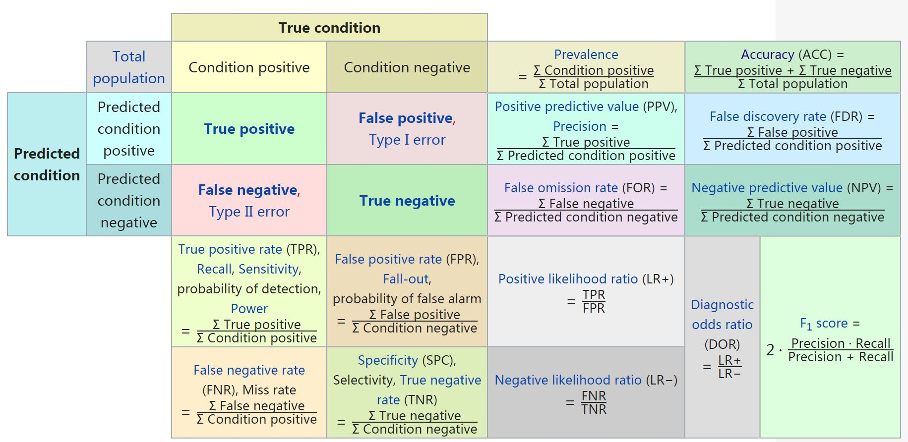
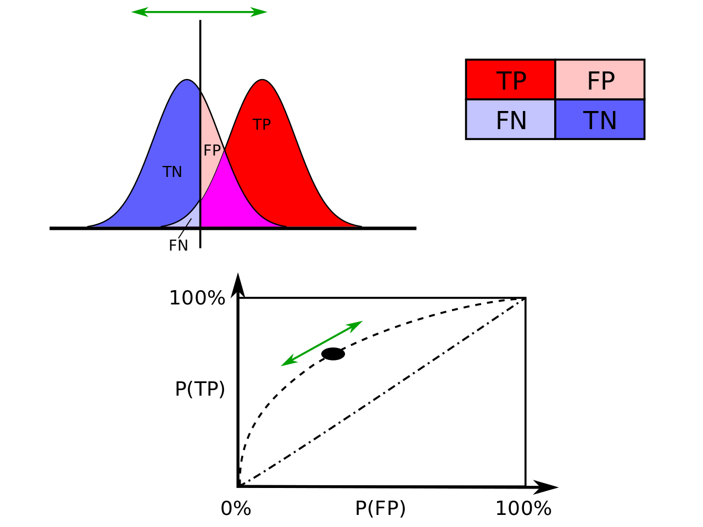
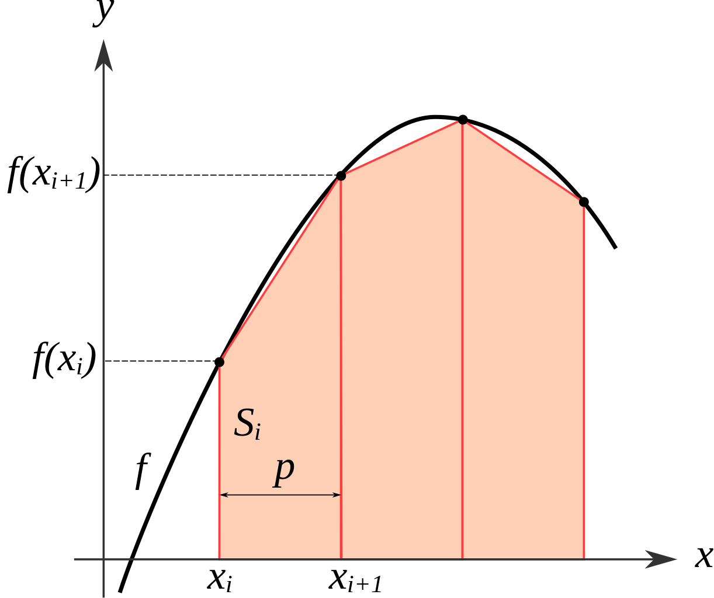

6. ROC 曲线
ROC ：Receiver operating characteristic curve，接收者操作特征曲线。
横坐标：false positive rate（FPR），即负例样本的预测错误率（越小越好）
\[FPR = \frac{FP}{N} = \frac{FP}{TN + FP}\]
纵坐标：true positive rate（TPR），recall，hit rate，sensitivity，即正例样本的预测正确率（越大越好）
\[TPR = \frac{TP}{P} = \frac{TP}{TP + FN}\]

离左上角越近的点预测 accuracy 越高。
在A、B、C三者当中，最好的结果是 A 方法。
B 的 accuracy 是 50%。
C’ 与 C 互为镜像点。不管 C 预测了什么，C’ 就做相反的预测。
6.1. 基本概念
ROC 分析的是二元分类模型。
2 类标签：
Positive（P）：正例
Negative（N）：负例
4 种预测结果：
True Positive（TP）：预测为正例，且预测正确。
False Positive（FP）：预测为正例，但预测错误。
True Negative（TN）：预测为负例，且预测正确。
False Negative（FN）：预测为负例，但预测错误。
常用评价指标：
正确率（accuracy）
准确率（precision，positive predictive value - PPV）
召回率（recall，hit rate，sensitivity，true positive rate - TPR）
F1 Score（准确率和召回率的调和平均）
\(2 \times 2\) 混淆矩阵（confusion matrix）：
{kind=link}
6.2. AUC
ROC 空间里的单点，是给定分类模型且给定得分阈值后得出的。但同一个二元分类模型的阈值可能设定为高或低，每种阈值的设定会得出不同的 FPR 和 TPR。 一般地，减小阈值，FPR 和 TPR 都会增大。 将同一模型每个阈值的 (FPR, TPR) 坐标都画在 ROC 空间里，就成为特定模型的 ROC 曲线。
{kind=link}
在比较不同的分类模型时，可以将每个模型的 ROC 曲线都画出来，比较曲线下面积作为模型优劣的指标。
AUC ：Area under the curve of ROC。
因为是在 1x1 的方格里求面积，AUC 必在 0 ~ 1 之间。
AUC 值 = 分类器把一个随机抽取的正例排在一个随机抽取的负例之前的概率（给予正例更高的得分）。
AUC 值越大的分类器，accuracy 越高。
- 计算方法
根据 FPR 和 TPR 计算，采用梯形积分法（Trapezoidal rule）。
\[\int_a^b f(x) dx \approx \sum_{k=1}^N \frac{f(x_{k-1}) + f(x_k)}{2} \Delta x_k\]穷举所有的正负样本对，累加分值，除以样本对的数目。
正样本的得分 > 负样本的得分，+ 1
正样本的得分 = 负样本的得分，+ 0.5
正样本的得分 < 负样本的得分，+ 0
{kind=link}
1## 方法一
2
3from sklearn.metrics import roc_auc_score, roc_curve, auc
4
5print roc_auc_score(labels, scores)
6
7FPR, TPR, th = roc_curve(labels, scores, pos_label=1)
8print auc(FPR, TPR)
9## auc 与 roc_auc_score 计算结果相同
10
11## 方法二
12
13def AUC(scores, labels):
14 pos = [i for i in range(len(labels)) if labels[i] == 1]
15 neg = [j for j in range(len(labels)) if labels[j] == 0]
16
17 area = 0.0
18 for i in pos:
19 for j in neg:
20 if scores[i] > scores[j] + 1e-6:
21 area += 1.0
22 elif abs(scores[i] - scores[j]) < 1e-6:
23 area += 0.5
24
25 return area / (len(pos) * len(neg))
6.3. 参考资料
机器学习之分类性能度量指标 : ROC曲线、AUC值、正确率、召回率
Receiver operating characteristic
ROC曲线
Trapezoidal rule